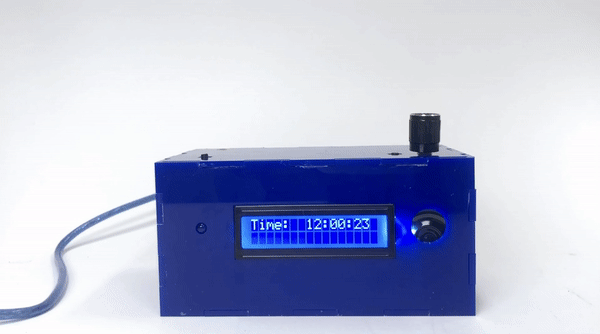
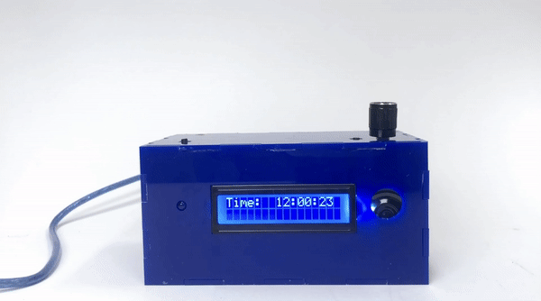
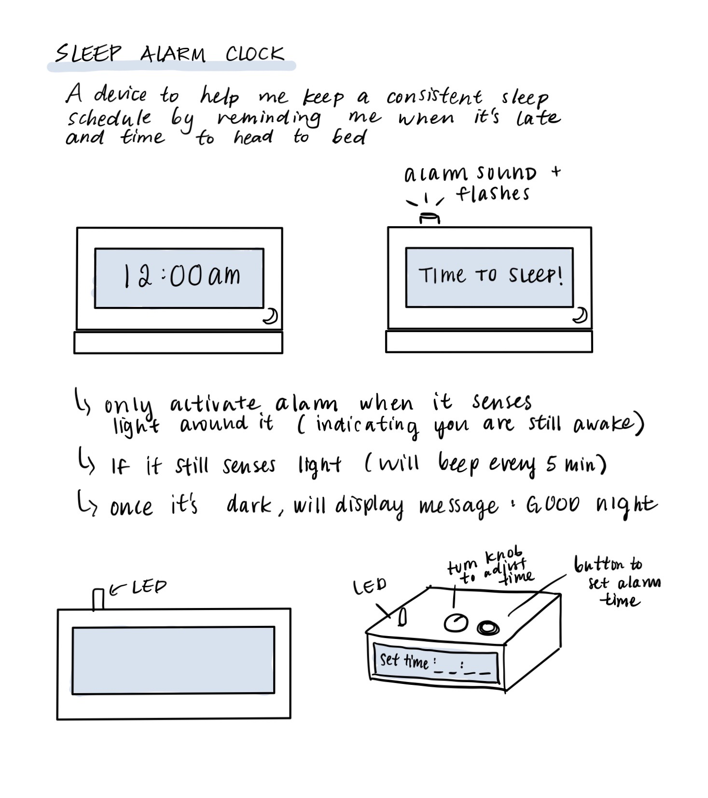
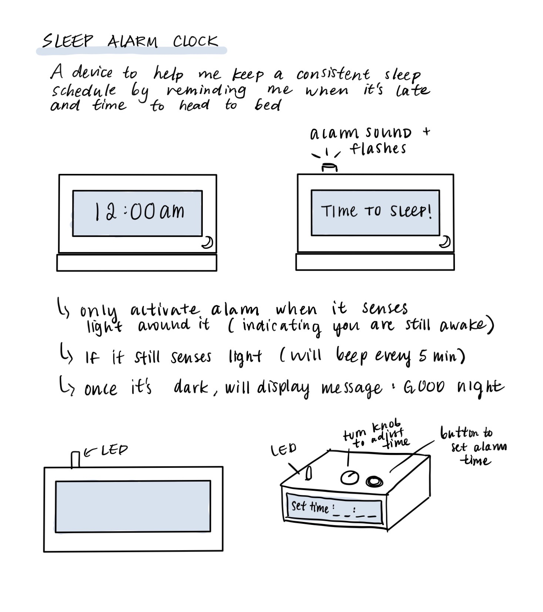

Snooze Alarm
An interactive sleep reminder
Role
Individual Project
Tools
Arduino, Fusion 360
Duration
Spring 2020
What if you had an alarm for going to bed on time?
We normally set alarms for waking up, but what if we could have an alarm to remind us to go to bed? Oftentimes sleeping early is just as important as waking up early, and my goal for this project was to design an assistive device for myself to help regulate sleep habits.
 

How it works
The clock senses whether or not the user is up late at night by detecting light levels in the room. If lights are still on, the alarm will sound as a reminder it’s time to get sleep. If the user is still not not in bed within 5 minutes of the alarm, a second snooze alarm will be set off. To avoid this alarm, users are encouraged to sleep earlier and ultimately maintain a consistent bed time.
 
